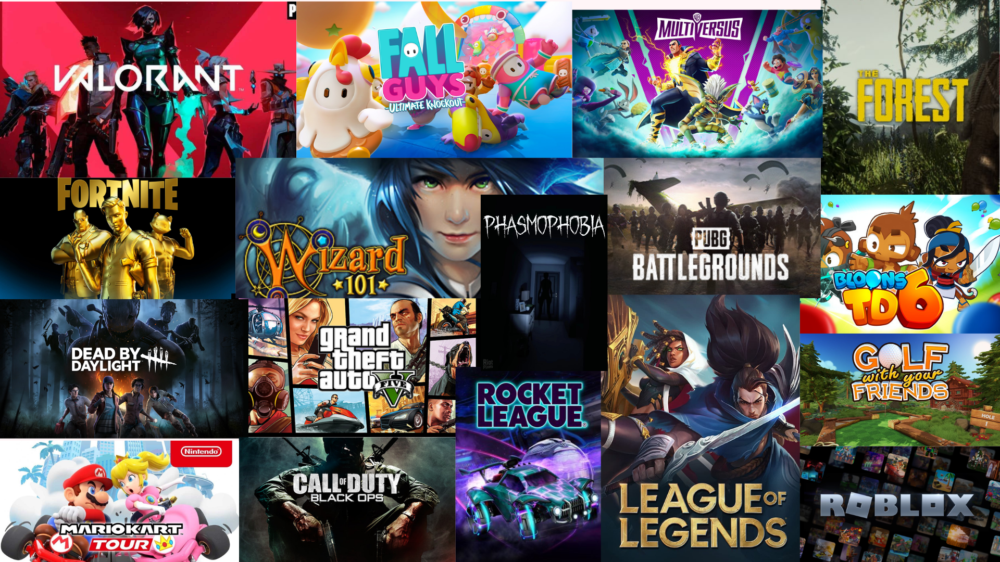
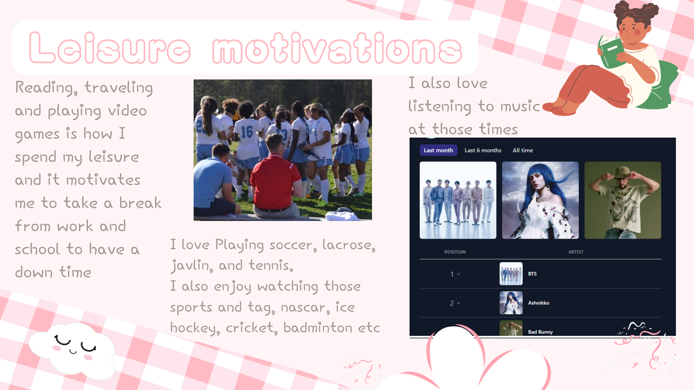
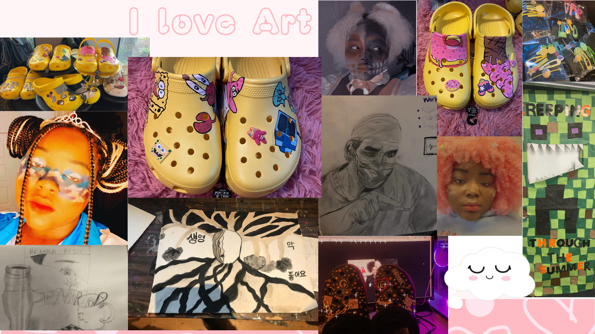
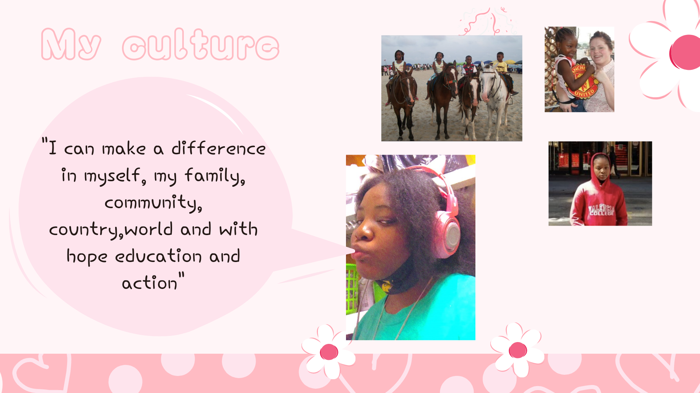
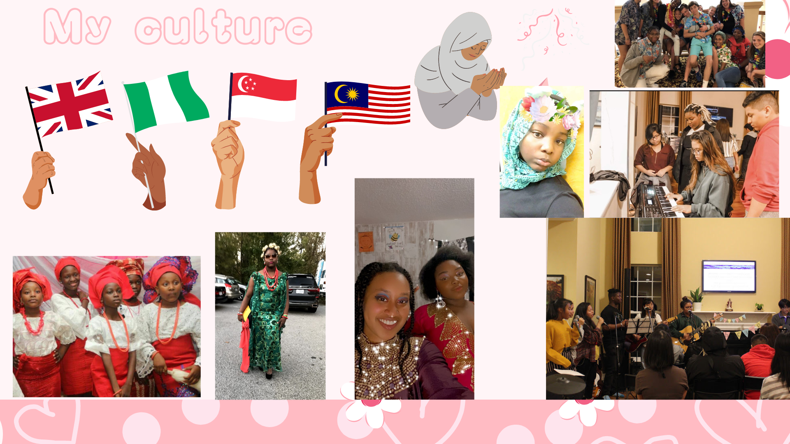
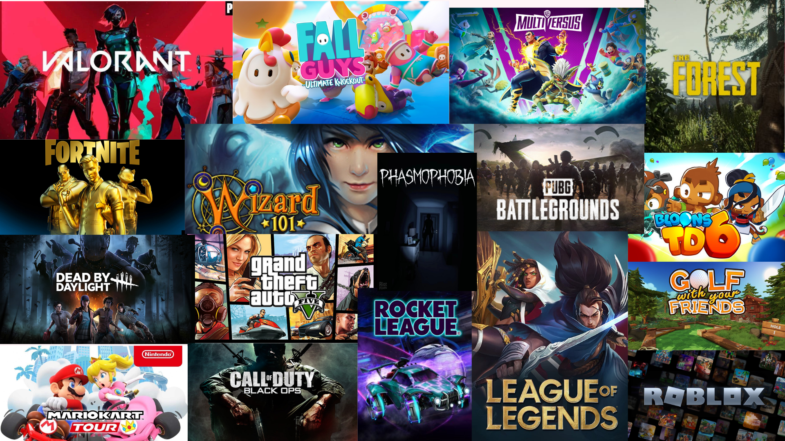
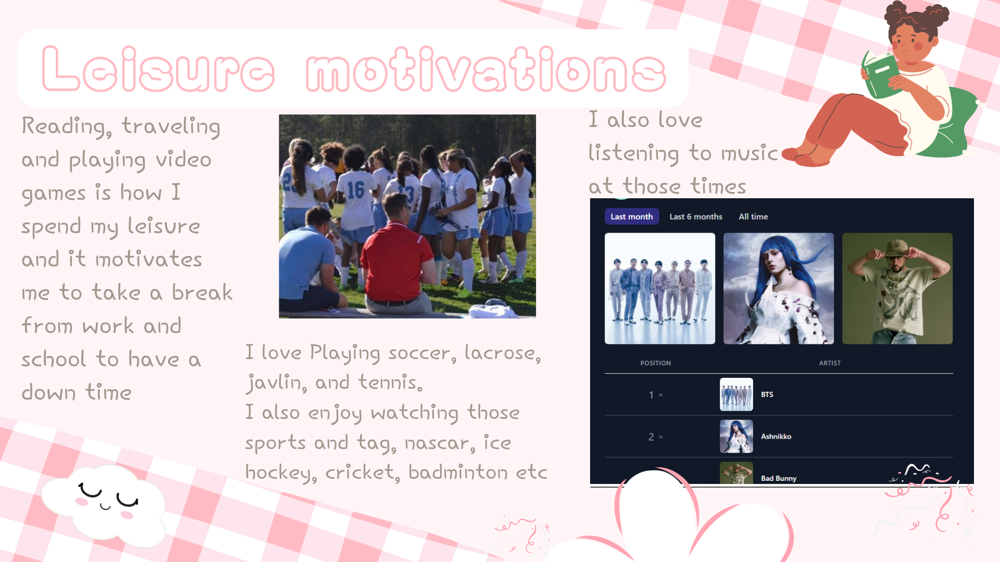
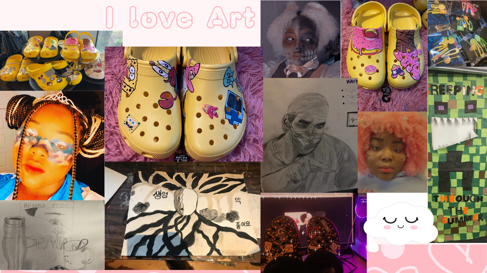
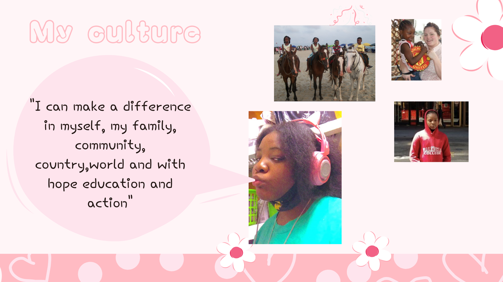
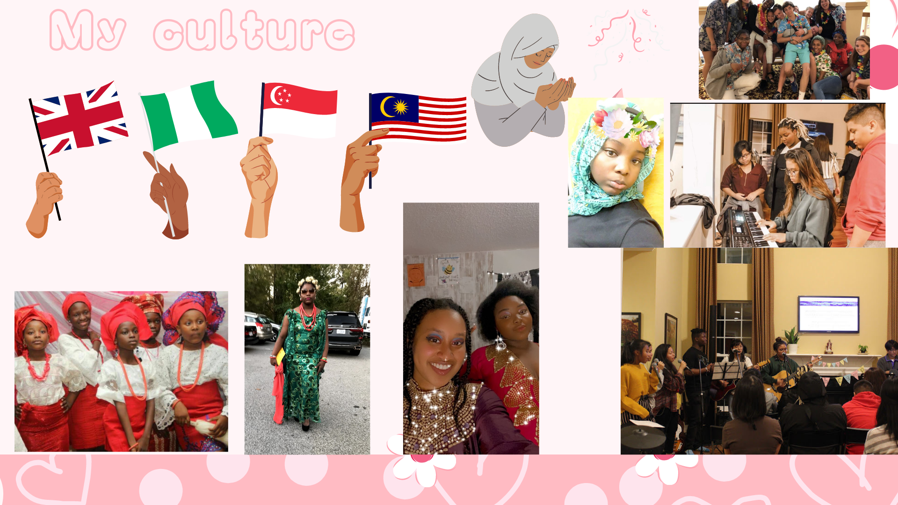

A little bit of my thoughts while making this :
As a 19 year old I always thought things will always go well for me as soon as i enter University and thought i'd start making great things and helping my community immediately.
But in reality I was just an 18 year old who moved out to become independent but is strugling with independencey.
All my life I've alway wanted to achive things on my own and never learned to ask for help, even turning down help because i didn't want to bother anyone.
I'm always helpful and trying to help anyone at my capacity. Writing down what motivates me helped me realise that HELP is my biggest strength , motivation and my weakness.
Because I help others since that's what motivates me by seeing people realived or happy because they feel better after struggling with something; It makes it my strength.
Not asking for HELP is my weakness because I usually regret not asking for help when i really needed it.
Since I started year up I've learnd out to ask for help more from the staff especially.
Motivation I'm so excited to be in yearup and enjoy the connections and different skills and personality in my LC.
Right now one of my biggest motivation is you all even though i didnt add that in my video.
I'm always looking forward to the days we meet in person since its the only time i dont have to just sit in front of a computer all day alone.
 








